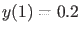
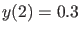

Next: Equilibrium continuation Up: Poincaré section and Poincaré Previous: Poincaré section and Poincaré Contents
[t,Y,TE,YE,IE] = solver(odefun,tspan,y0,options).
For the  -th event
function:
-th event
function:
Example
Let a set of two event functions be introduced by defining the function testEV:
function [value,isterminal,direction]= testEV(t,y,varargin) value=[y(1)-0.2;y(2)-0.3]; isterminal=zeros(2,1); direction=ones(2,1); endThis event function requires that the system is at least two-dimensional and defines two events, namely  and . The integration will not be terminated if an event is detected and all zeros will be detected regardless of the direction of
We now consider the system adaptx in the directory Testruns/TestSystems of MATCONT with three state variables and two parameters. By runnning the script testPoincare:
TSTP=@testEV;
OPTIONS = odeset('RelTol',1e-8,'Events',TSTP);
hls = adaptx;
[t,y,TE,YE,IE] = ode45(hls{2},[0 300],[0.3 0.5 -0.1],OPTIONS,1,0.8);
x0 = y(end,:);
[t,y,TE,YE,IE] = ode45(hls{2},[0 10],x0,OPTIONS,1,0.8);
we integrate the system adaptx from
TE =
5.6334
6.6979
YE =
-0.2247 0.3000 0.3131
0.2000 0.4213 -0.1059
IE =
2
1
The test is run by typing testPoincare in the command line.